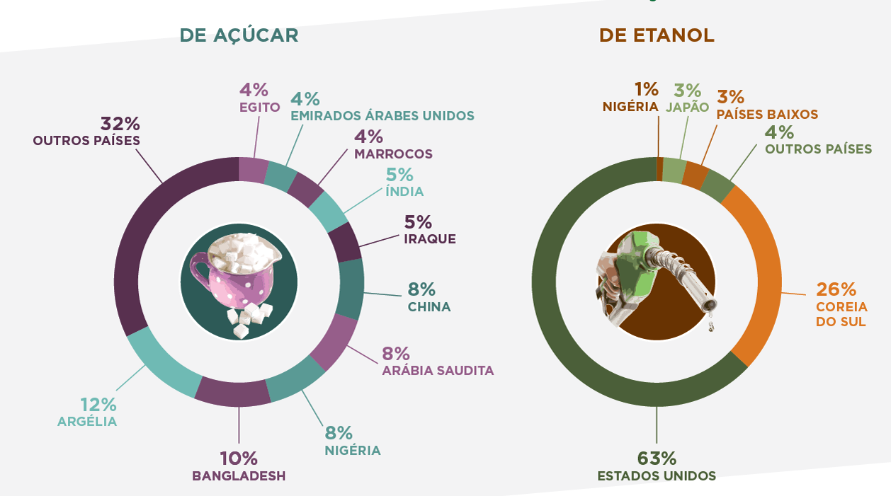
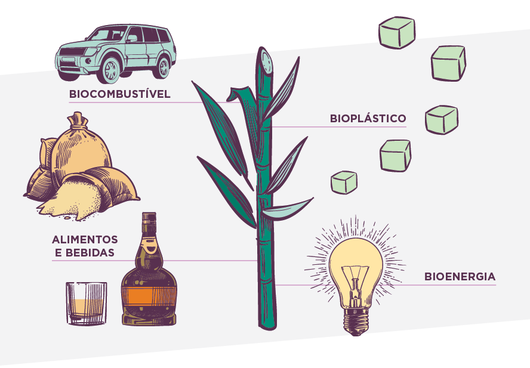

A cana-de-açucar
Cana-de-açúcar: mais de 500 anos sendo uma importante cultura para a economia brasileira
A cana-de-açúcar há mais de 500 anos movimenta a economia brasileira. O setor sucroalcooleiro é responsável por 2% do produto interno bruto (PIB) nacional, seja para a produção de açúcar ou de álcool (etanol.) como para a exportação desses produtos

Etanol e o açucar
Cana-de-açúcar: Suas produções
Sendo um dos biocombustíveis mais importantes, o etanol é , diminui a poluição e ajuda no combate ao aquecimento global. Isso porque é renovável, protege os solos, gera empregos e investimentos, entre outros benefícios. Além do mais, o C02 lançado à atmosfera durante o seu processo produtivo, é compensado pelas lavouras.
No entanto, nem só de açúcar e etanol vive a cana-de-açúcar. Apesar desses dois produtos serem os carros chefe de toda a produção, atualmente muitos produtos são derivados da cana e estão presentes no nosso dia a dia.

Desafios e perspectivas na produção da cana-de-açúcar
O processo de cuidados de um canavial não é tão simples, ainda mais quando o plantio é grande, onde há uma maior necessidade de encargos, como manter o solo úmido, pois o controle da terra é fundamental para o desenvolvimento do plantio, evitar percas e garantir a oxigenação da raiz da planta. O controle da água e temperatura define todo o crescimento e desenvolvimento da planta, reforça Luiz de Queiroz, professor do Departamento de Engenharia de Biossistemas da Escola Superior de Agricultura (ESALQ,2015).
E a falta de um controle específico de água no plantio é um risco à produção de cana, um exemplo desse problema é a queda da produção de cana nas lavouras de São Paulo, verificada nesta safra, em razão da falta de controle do canavial (JORNAL BIOENERGIA, 2015).
A má distribuição de água ocasiona o estresse hídrico nas plantas, causando redução da produção dessas culturas, consequentemente trazendo dificuldades e crises no agronegócio. No entanto apenas o controle da água não é eficaz para a evolução da produção, mas também a temperatura, pois é essencial averiguar as condições climáticas do local para que a irrigação seja bem distribuída.
Referências